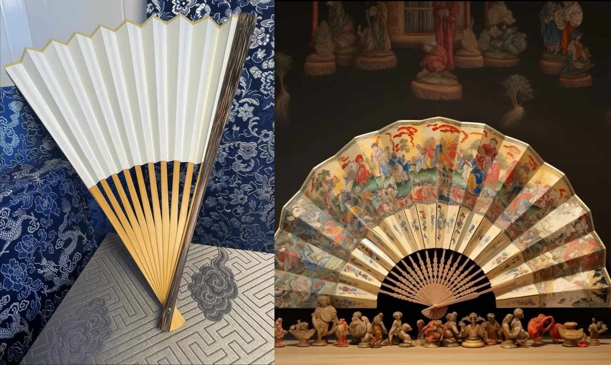

轻摇古韵新风，漫绘时光雅趣
|  |
DIY工艺扇工艺扇 DIY 之境，恰是一座连接古今创意的灵感虹桥，引领您跨越时空界限、悠游艺术瀚海。在此天地，您将变身艺术精灵，挥洒才情创意，谱写个性华章。 工艺扇，绝非消暑用具的平凡局限，而是文化传承的鲜活载体、艺术创新的灵动舞台。DIY 工艺扇，是邂逅历史、对话先人的心灵密约；是挥洒创意、雕琢时光的生活诗笺；是传承经典、开创新风的文化使命担当。诚邀您踏入工艺扇 DIY 绮梦之域，摇漾古风今韵，轻启诗意生活，漫绘岁月绮丽画卷、雕琢时光不朽传奇。 |